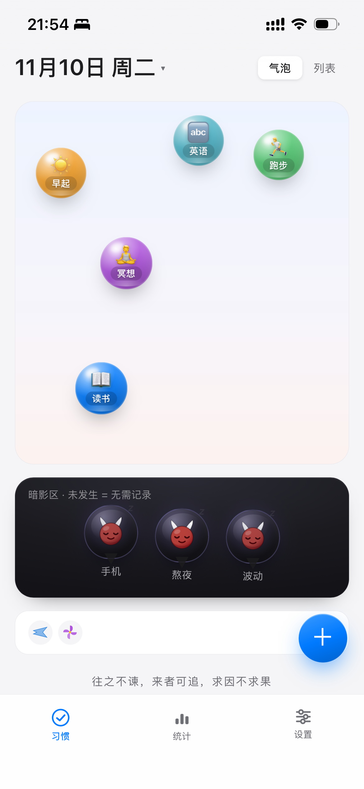
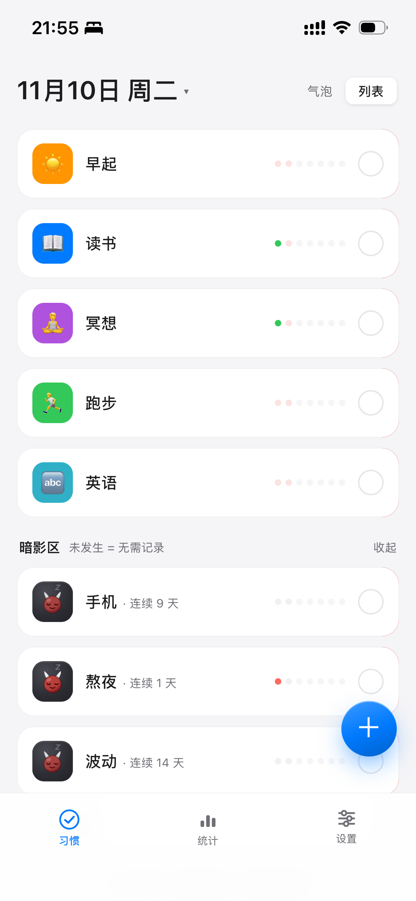
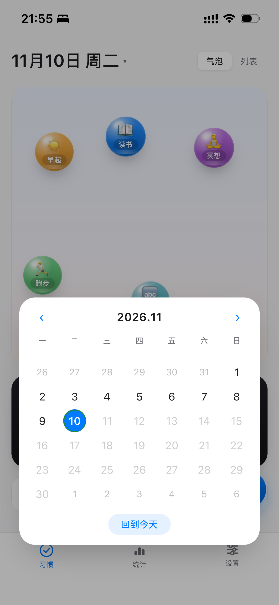
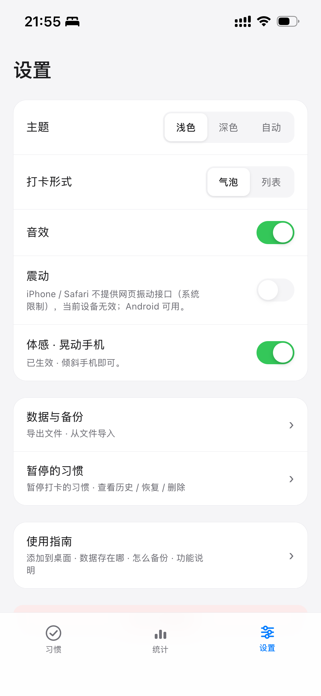
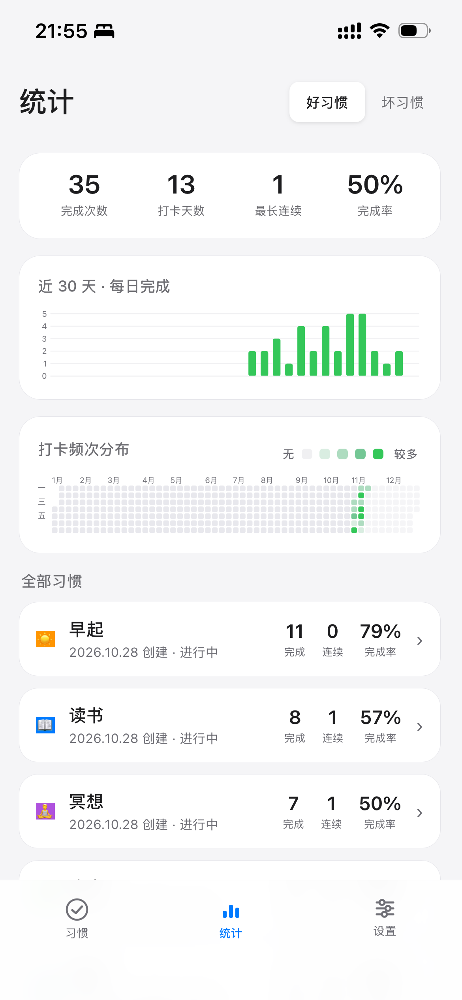
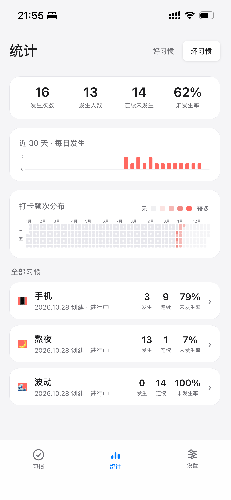
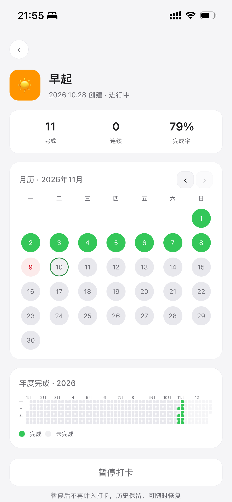
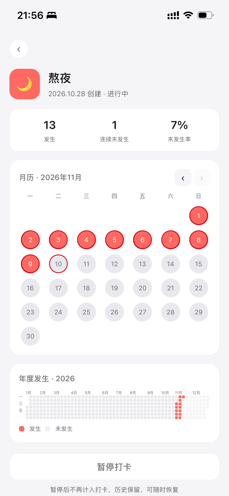

一个装在手机桌面上的小本子。点一下戳破气泡，一天就算记完了；没做到的那天，它就空着。
没参与过的人，读完这一页就够了。
六段真机录屏，一段一个卖点；点下面的画面切换。
模板点一下就建好；自定义时从 18 种颜色、40 个常用图标里挑，名字想写才写。
clip-01 ~ clip-06 的 MP4 放进 docs/media/ 即可自动出现。两种打卡形式、补记入口，设置都收在一处。




全局与单个习惯两个视角，好绿坏红是同一套语言。




产品到这儿就够了，下面留给想看细节的人。